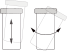
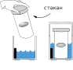

Выберите страну и язык

1. Наповнiть стакан йогуртницi питною водою кiмнатної температури до половини, додайте сумiш (весь вмiст пакету), закрийте стакан кришкою та енергiйно збовтайте до повного розчинення сумiшi. Додайте води доверху стакану та збовтайте знову.
2. Залийте в йогуртницю 2 склянки води з крану. Встановіть стакан з сумішшю в йогуртницю. Ввімкніть пристрій в режимі ІІ (йогурт) та залиште на 8–12 годин для сквашування.
3. Вимкніть йогуртницю, вилийте з неї воду та поставте стакан з йогуртом у холодильник.
Використовуйте банку за кришкою ємністю 1 л для розчинення суміші, як описано в пункті 1 інструкції. Покладіть ємність з сумішшю до йогуртниці або мультиварки та ввімкніть прилад в режим «йогурт» або «40 °С» на 8–12 годин. Якщо використо- вуєте мультиварку – додайте до її чаші дві склянки води.